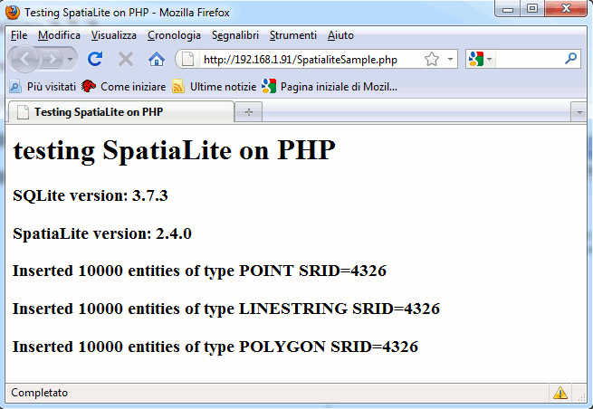

"font-size: 32pt">Language bindings: PHP
"HTML Tidy for HTML5 for Linux version 5.6.0" />
|
"font-size: 32pt">Language bindings: PHP |
| 2011 January 28 |
| Back |
"font-size: 22pt">Test environment
Linux Debian:
just to be sure to check an up-to-date state-of-the-art I've
actually used Debian Squeeze (32 bit).
So I'm actually sure that all required packages are reasonably
using the most recent version.
PHP and SQLite connector:
My Debian Virtual Machine had no Apache and PHP stuff already
installed.
So I started my test installing the following packages:
|
"font-size: 20pt">Caveat The most recent PHP 5.3 seems to be absolutely required in order to support SpatiaLite. simply to immediately discover that PHP (and sqlite) where so obsolete that using SpatiaLite was completely impossible. updating to PHP 5.3 is absolutely required before attempting any preliminary test. |
"font-size: 22pt">Configuring PHP
I quickly discovered that using the default PHP configuration
SpatiaLite cannot be dynamically loaded as an extension to the
basic SQLite connector.
At least the following change has to applied first into the
"Courier New, monospace">/etc/php5/apache2/php.ini
configuration script.
default
"Courier New, monospace">php.ini:
|
"#FFFFFF">[sqlite3] |
"Courier New, monospace">php.ini:
"#FFFFFF">[sqlite3] /var/www/sqlite3_ext |
load dynamic extensions.
Anyway you must explicitly enable a given directory containing any
extension to be dynamically loaded.
|
"#FFFFFF"># /etc/init.d/apache2 restart |
"Courier New, monospace">php.ini script restarting
the Apache WEB server is absolutely required, so to materialize the
new configuration.
"#FFFFFF"># mkdir /var/www/sqlite3_ext /var/www/sqlite3_ext |
"Courier New, monospace">/var/www/sqlite3_ext
directory.
And finally I've copied the
"Courier New, monospace">libspatialite.so shared
library form
"Courier New, monospace">/usr/local/lib into this
directory.
Please note well: in order to perform all the above
mentioned operations you must login as
"Courier New, monospace">root
"font-size: 22pt">PHP sample program
SpatialiteSample.php
"Courier New, monospace"><html> PHP</title> PHP</h1> SPATIAL_REF_SYS $row[0]</h3>"; $row[0]</h3>"; ("; |
"Courier New, monospace">/var/www/SpatialiteSample.php
Then I simply started my Firefox WEB browser requesting the
corresponding URL:

And that's all.
|
Please note: may well be that using other different Linux distros (or Windows) adjusting any pathname as appropriate for your specific platform should be required. |
| Back |

"CC-BY-SA logo" /> |
Author: Alessandro Furieri |
| This work is licensed under the
"http://creativecommons.org/licenses/by-sa/3.0/">Attribution-ShareAlike 3.0 Unported (CC BY-SA 3.0) license. |
|
|
|
|
 |
Permission is granted to copy, distribute and/or modify this
document under the terms of the Documentation License, Version 1.3 or any later version published by the Free Software Foundation; Texts. |